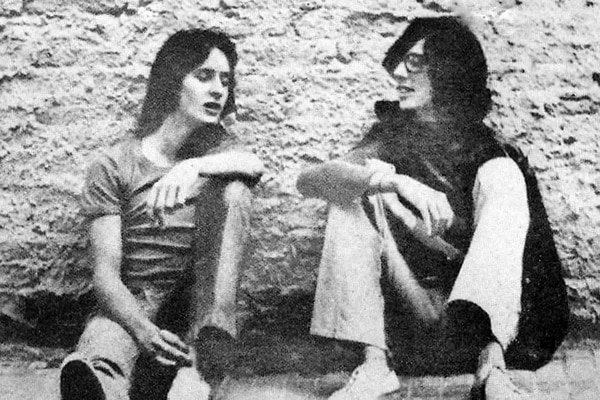
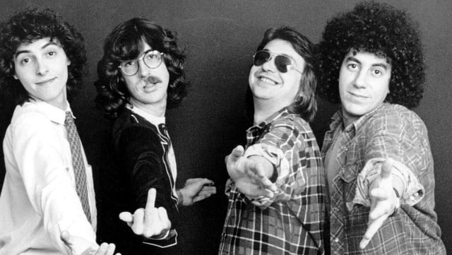

SUI GENERIS
Sui Generis fue una banda argentina de rock formada principalmente por Charly García (teclados, guitarra acústica, voz y composiciones) y Nito Mestre (flauta, guitarra acústica y voz), considerada como una de las más importantes de los orígenes del rock latinoamericano. Sus canciones (en particular las de sus dos primeros álbumes) se convirtieron virtualmente en himnos cantados por generaciones de argentinos, formando hoy parte del paisaje cultural nacional de ese país. Si bien a lo largo de su carrera la banda contó con otros miembros, fue el dúo García/Mestre el que quedó asociado con el nombre, y al que debieron su enorme fama posterior.
LA MAQUINA DE HACER PAJAROS

La Máquina de Hacer Pájaros fue un supergrupo argentino de rock progresivo, que estuvo activo entre 1976 y 1977. Sus integrantes fueron Charly García (ex Sui Generis), Oscar Moro (ex Los Gatos y Color Humano), Carlos Cutaia (ex Pescado Rabioso), Gustavo Bazterrica (futuro integrante de Los Abuelos de la Nada), y José Luis Fernández (ex Crucis). Tras la disolución de Sui Generis, Charly García emprendió un nuevo proyecto, introduciendo la novedad de dos tecladistas simultáneos en escena. Esta banda, como dijo Charly, pretendía ser “el Yes del subdesarrollo”. Se le reconocen fuertes influencias de Genesis, Yes, Camel, Pink Floyd, Focus y Steely Dan. Tuvo una escasa aceptación del público argentino durante su época de actividad y no fue hasta unos años después cuando alcanzó un verdadero reconocimiento.
SERU GIRAN
Serú Girán fue una banda argentina de rock, formada en 1978 por Charly García, Pedro Aznar, David Lebón y Oscar Moro, músicos que ya eran ampliamente reconocidos por sus agrupaciones anteriores. Es considerado uno de los actos musicales más importantes en la historia de la música latinoamericana y en la evolución del rock en español, sirviendo como influencia a múltiples artistas y bandas que surgirían en los años posteriores. Además, Serú Girán sería parte de notoria atención mediática por sus declaraciones socio-políticas en contra de la dictadura militar argentina que acechaba a la Argentina durante los fines de los 70 e inicios de los 80. A pesar de la recepción mixta por parte del público del álbum debut de la banda de nombre homónimo, lanzado en 1978, a pesar de contener el éxito nacional «Seminare», Serú Girán se catapultaría a la consagración con su álbum siguiente, La grasa de las capitales (1980), considerado uno de los mejores álbumes en la historia del rock nacional por la revista Rolling Stone, que incluyó el controversial «Viernes 3 AM» que llegó a ser censurado por la dictadura militar.